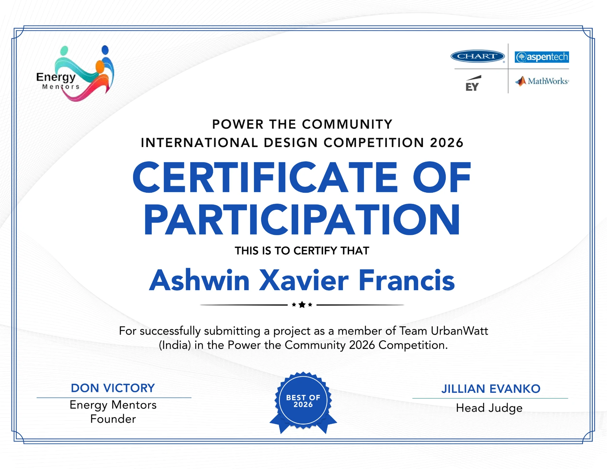

Energy Mentors · Certificate of Participation
Power the Community 2026
Project submission as a member of Team UrbanWatt (India).
View certificate →
Project submission as a member of Team UrbanWatt (India).
View certificate →
51-hour course in remote sensing, geographic information systems and satellite navigation.
View certificate →
Internship certificate for work on hybrid energy systems.
View certificate →
Training in airborne radar, communications systems and associated test and maintenance practices.
View certificate →